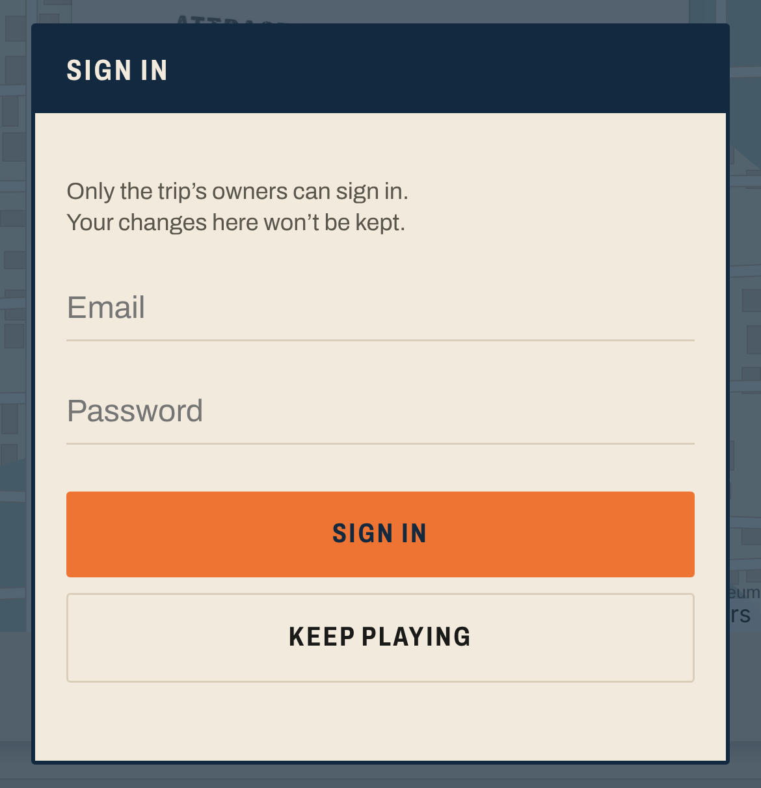
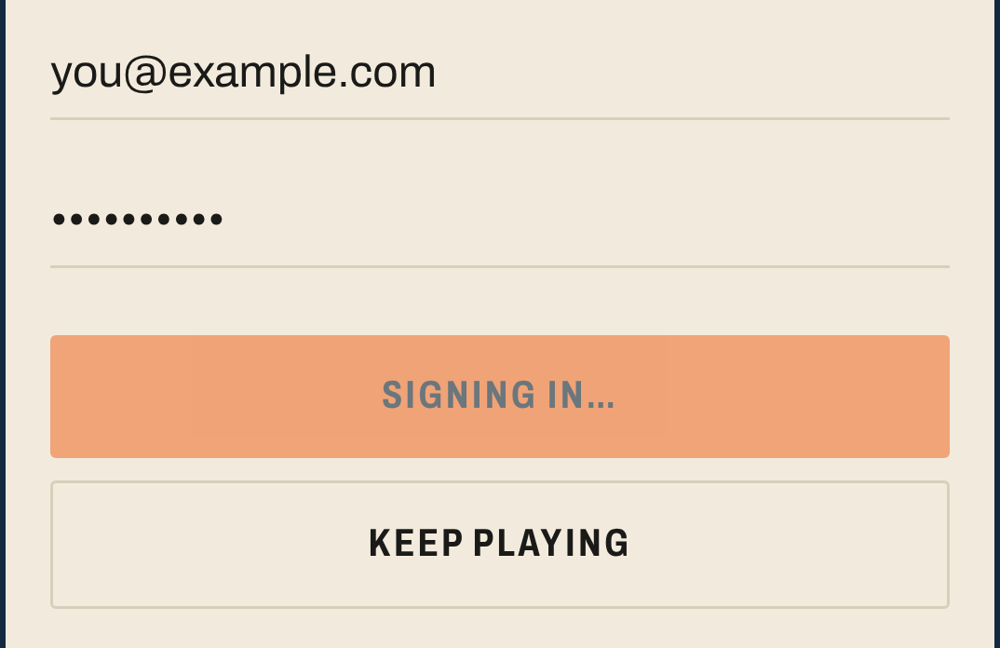
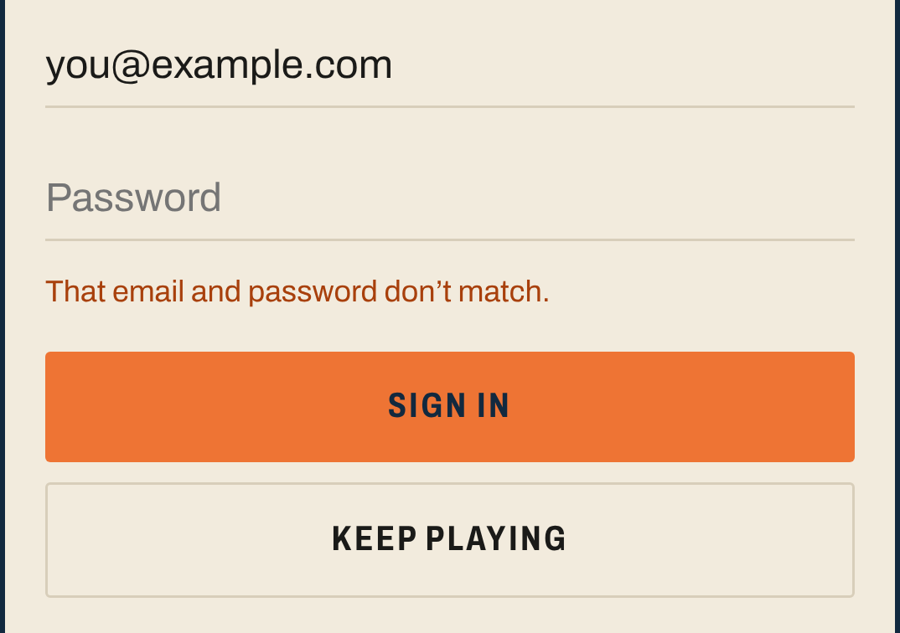
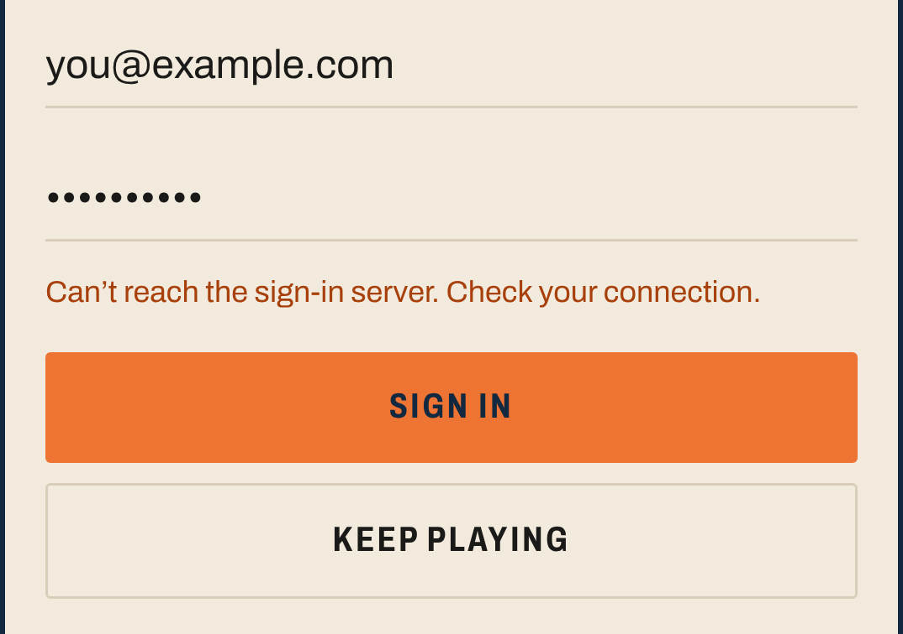
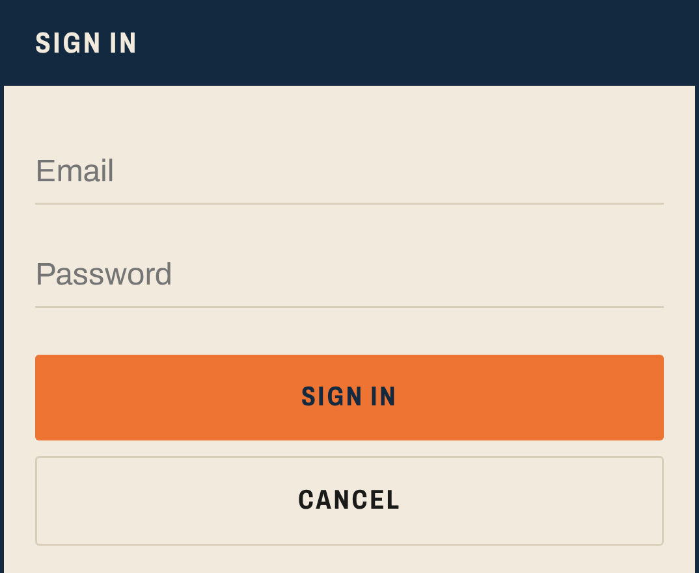

Signing in, both concepts
Only the words in the sign-in sheet change; its look stays as it is today.
1 · Tap Sign in in the playground
The sheet opens over whatever you were looking at. Nothing behind it changes.
Left: a place open in the playground. Right: after tapping Sign in.
2 · The sheet

Visitors read why they can’t sign in, tap Keep playing, and lose nothing. Tapping outside the sheet does the same.
3 · While it checks

The button says Signing in… and can’t be tapped twice.
4 · If something’s wrong

Wrong password: your email stays, the password clears. You’re still in the playground.

No connection: nothing is lost; the playground keeps working.
5 · You arrive in the real trip
The badge you tapped is there for a beat, then it’s inked into your account badge. This only plays right after signing in, not on every visit.
Two questions for you
1. When you’re signed out of the real trip (new phone, cleared Safari), should this same sign-in button sit in the corner? Today nothing is there until you try to edit. We recommend yes. Then the sheet looks like this, without the playground line:

2. Is the line in the sign-in sheet enough to tell visitors their changes aren’t kept, or do you want something on the map too?